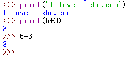
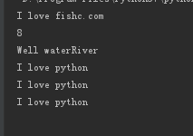
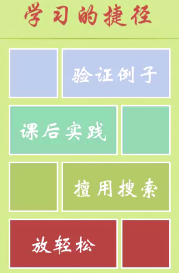

知识点汇总
1. Python的应用范围：操作系统、3D动画、WEB、企业应用、云计算等。
2. Python是什么类型的语言？脚本语言，即电脑编程语言，比C、C++或java之类的系统编程语言简单容易。
3. 什么是脚本语言？ 一个脚本可以使得本来要用键盘进行的相互式操作自动化。一个shell脚本主要由原本需要在命令行输入的命令组成，或在一个文本编辑器中，用户可以使用脚本来把一些常用的操作组合成一组串行。主要用来书写这种脚本的语言叫做脚本语言。很多脚本语言实际上已经超过简单的用户命令串行的指令，还可以编写更复杂的程序。
4. 脚本语言有哪些特性？ 语法和结构简单、学习和使用简单、通常以容易修改程序的“解释”作为运行方式，而不需要“编译”、开发产能优于运行性能。
IDLE即Python shell ，shell指的是‘外壳’，通过键入文本与程序交互的途径
>>> 这个提示符含义是：Python 已经准备好了
快捷键：ALT+n执行重上往下的第一个命令，ALT+p首先执行最后一条命令

#井号起注释的作用，不会被运行
print('I love fishc.com')
print(5+3)
#字符串拼接
print('Well water' + 'River')
print('I love python\n' *3) # \n，换行运行结果：

1、看视频一定要写笔记，然后整理笔记成博客
2、例子要验证，敲
3、画流程图，先实现主干的，然后再扩展。学会调试代码
4、编码前先进行分析
